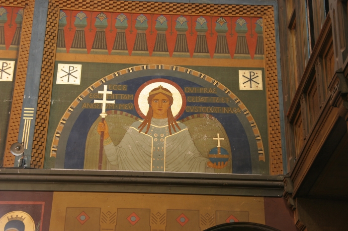

<?php
	$tabulka = true;

	require ('_include/php/zaklad.php');

	titulek ('Beuronské umìní - opatství sv. Gabriela');

	menu ('Podívat se na 1. svìtce','gabriel-pravo-svetec-01.html');
	menu ('Podívat se na 1. lunetu','gabriel-pravo-luneta-01.html');
	menu ('Podívat se na 2. svìtce','gabriel-pravo-svetec-02.html');
	menu ('Podívat se na 2. lunetu','gabriel-pravo-luneta-02.html');
	menu ('Podívat se na 3. svìtce','gabriel-pravo-svetec-03.html');
	menu ('Zpìt','gabriel-vnitrek.html');

	zahlavi ();
?>



<h1>Andìl strá¾ný</h1>
<p style="text-align:center">
  Je vzýván jako prùvodce, ochránce a pøítel èlovìka.
</p>

<?php
  zapati ();
?>
